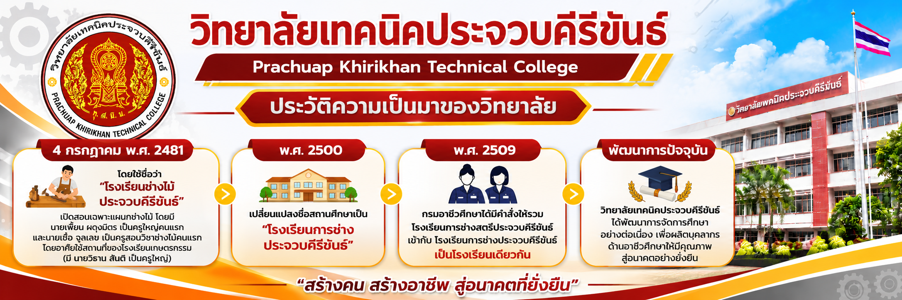

วิทยาลัยเทคนิคประจวบคีรีขันธ์ เป็นสถานศึกษา ที่จัดการเรียนการสอนด้านวิชาชีพและเทคโนโลยี มุ่งเน้นพัฒนาผู้เรียนให้มีความรู้ ความสามารถ และทักษะในการประกอบอาชีพ
วิทยาลัยมุ่งส่งเสริมการเรียนรู้ทั้งภาคทฤษฎี และภาคปฏิบัติ เพื่อให้ผู้เรียนสามารถนำความรู้ ไปประยุกต์ใช้ในการทำงานและการดำเนินชีวิต
มุ่งพัฒนาผู้เรียนให้มีความรู้คู่คุณธรรม มีทักษะวิชาชีพและพร้อมก้าวสู่โลกอาชีพ
1. ส่งเสริมการจัดการเรียนการสอนด้านวิชาชีพ
2. พัฒนาทักษะและความสามารถของผู้เรียน
3. ส่งเสริมการใช้เทคโนโลยีและนวัตกรรม
4. พัฒนาผู้เรียนให้มีคุณธรรมและจริยธรรม
เว็บไซต์แนะนำวิทยาลัยเทคนิคประจวบคีรีขันธ์